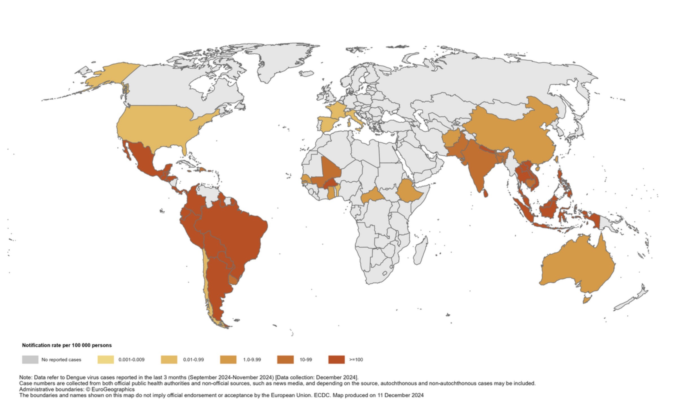
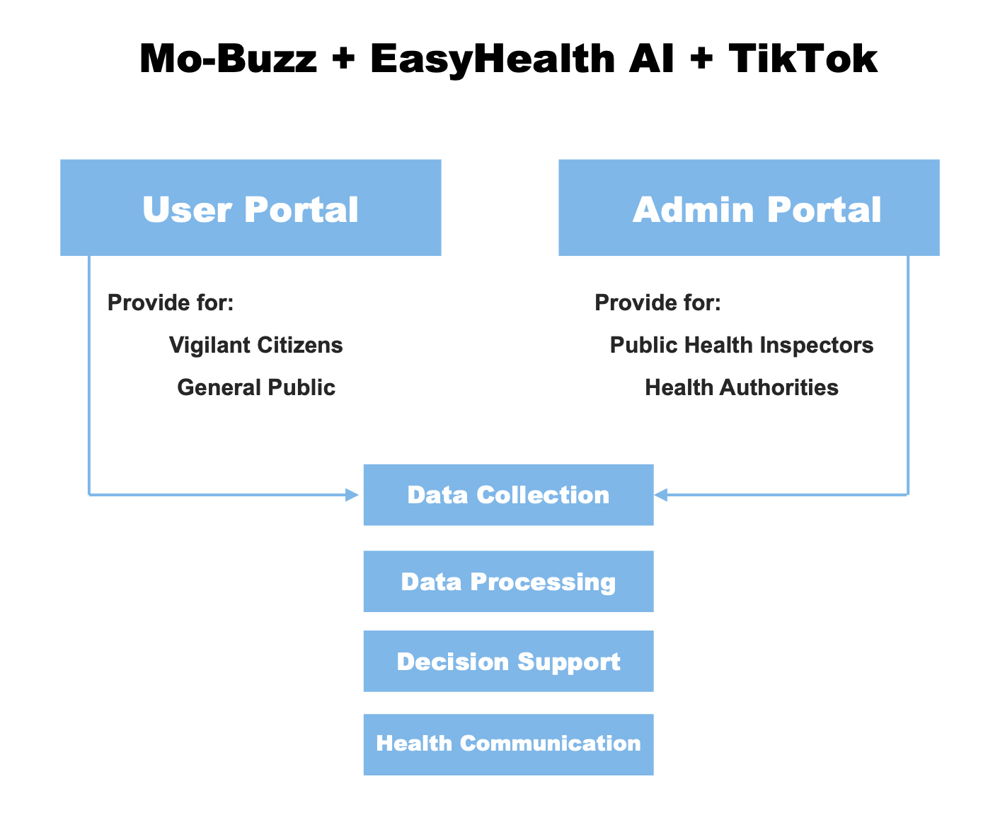

AI for Battling Vector-borne Diseases
Plan for the Digital Prevention and Control Program of Dengue Fever
Dengue fever is an acute infectious disease caused by the dengue virus, primarily transmitted by the Aedes albopictus and Aedes aegypti mosquitoes. Clinically, it is characterized by a sudden onset of fever, widespread muscle, bone, and joint pain, extreme fatigue, rash, swollen lymph nodes, and leukopenia. The World Health Organization (WHO) recognizes dengue fever as one of the top ten public health threats.
Epidemiology of Dengue Fever: Global, National, and Regional Perspectives
- Global Epidemiological Overview
Each year, more than 100 million to 400 million cases of dengue are reported worldwide, with 3.8 billion people living in dengue-endemic areas, the majority of which are in Asia, Africa, and the Americas. Data show that over a 50-year period from 1960 to 2010, the global incidence of dengue increased approximately 30-fold. In 2023, the highest number of dengue cases were reported, with the WHO’s Americas region reporting 4.5 million cases and 2,300 deaths. Due to climate change and urbanization, dengue cases may increase and the geographic spread of the disease could expand.

- Dengue Fever in China: National Trends and Challenges
In China, dengue is primarily distributed in the southern regions, but with global warming and improved transportation, there is a trend for the disease to spread westward and northward. In 2024, the number of reported dengue cases in China reached 23,888, indicating an increased risk of large-scale outbreaks.
Our analysis of dengue cases in China from 2005 to 2024 shows a general upward trend in dengue epidemics over the past 20 years, with a particularly high incidence in the last two decades. In 2014, the number of cases reached 46,846.
Dengue fever shows a distinct regional distribution. In the past five years, dengue transmission risks have been present in Southwest China, South China, and East China, with most cases concentrated in the border areas of Southwest and South China. This suggests a wide geographic distribution of the risk for large-scale dengue outbreaks, with more notable outbreaks in specific regions. From 2020 to 2022, primary outbreak areas were concentrated in Dehong Dai and Jingpo Autonomous Prefecture of Yunnan Province and Wuzhou City in the Guangxi Zhuang Autonomous Region. In 2023, the primary outbreak areas were focused on seven cities in the southwest border regions of Yunnan Province.
Dengue fever shows a distinct regional distribution. In the past five years, dengue transmission risks have been present in Southwest China, South China, and East China, with most cases concentrated in the border areas of Southwest and South China. This suggests a wide geographic distribution of the risk for large-scale dengue outbreaks, with more notable outbreaks in specific regions. From 2020 to 2022, primary outbreak areas were concentrated in Dehong Dai and Jingpo Autonomous Prefecture of Yunnan Province and Wuzhou City in the Guangxi Zhuang Autonomous Region. In 2023, the primary outbreak areas were focused on seven cities in the southwest border regions of Yunnan Province.
- Dengue Fever in Yunnan: Regional Patterns and Concerns
Yunnan Province, located near Southeast Asian countries like Laos, Myanmar, and Vietnam, where dengue fever is widely prevalent, is one of the high-incidence areas for dengue in China.
We collected dengue case data from Yunnan between 2005 and 2023 and found significant variations in the number of cases over this period. From 2005 to 2013, the number of cases remained at a relatively low level, with typically fewer than 50 cases reported annually, and there was little change overall. However, starting in 2014, the number of cases increased significantly and showed an upward trend each year. 2019 marked a major peak year, with 6,471 reported cases, the highest during this period. Afterward, the number of cases sharply dropped in 2020, to only 842 cases, and further decreased in 2021 and 2022, with 13 and 540 cases, respectively.However,in 2023, the number of cases surged dramatically, reaching 13,482, a new high in 19 years. This data indicates a large-scale recurrence and spread of dengue outbreaks.
Dengue Fever Prevention and Control System Technical Plan in Yunnan
Overview
- The successful implementation of the Mo-Buzz model in Sri Lanka and Thailand provides valuable experience for dengue fever control. This model has shown that timely identification and effective management of mosquito breeding sites are key to controlling vector-borne diseases like dengue fever. By utilizing digital tools for real-time monitoring and rapid response, the prevention and control effects have been significantly enhanced.
With the rapid development of artificial intelligence (AI), personalized, one-on-one smart Q&A is becoming a new form of information dissemination, capable of providing real-time responses and transmitting epidemic-related information. At the same time, short-video platforms like TikTok demonstrate powerful information dissemination capabilities and user engagement.
Therefore, we propose Mo-Buzz + EasyHealth AI + TikTok as an innovative technical pathway for epidemic prevention and control. This approach is applicable to dengue fever control in the Yunnan province of China, with plans to expand its use to other infectious diseases monitoring and management.
This technical pathway will connect health management agencies, public health departments, and the general public through social media, using crowdsourced data collection and AI technology for digital gathering, analysis, and dissemination of epidemic information. A series of functional modules will be developed to enhance the efficiency and accuracy of information transmission while increasing community involvement, encouraging the public to participate in epidemic prevention efforts.
System Architecture
- Based on the Mo-Buzz + EasyHealth AI + TikTok approach, we will develop an “all-in-one multi-end” application system. The system will consist of two main modules: the User-Portal and the Admin-Portal. The User-Portal will focus on data collection and health education, while the Admin-Portal will concentrate on data analysis, epidemic monitoring, and health interventions. This modular structure ensures system flexibility and scalability, improving both the response speed and accuracy of epidemic control efforts.

User Portal
The User-Portal module is designed for public use, aiming to enhance public participation and data collection efficiency while providing personalized health education and information dissemination. Its specific functions are as follows:
Location and Reporting Function:
Public users can input information via smartphones, reporting suspected mosquito breeding sites through text descriptions, photo uploads, or video recordings. The system will utilize the smartphone’s GPS functionality to log the geographical location of the submitted information. Based on the characteristics of the report, such as breeding site type, environmental conditions, and case type, the system will automatically assign tags to the data for subsequent management.Epidemic Information Dissemination:
Based on the user’s location, the system will automatically push nearby epidemic alerts. It will also offer personalized prevention and control knowledge based on the user’s historical behavior. The system will support health departments in publishing official announcements, ensuring timely delivery of critical information. The system will integrate with mainstream social media platforms (like WeChat and Weibo) through APIs, allowing users to log in with their social media accounts and share information quickly. The system will optimize content format and presentation based on platform characteristics to help users share epidemic control-related content, increasing public participation in epidemic prevention.Health Education Smart Assistant:
Based on the GPT model, the system can understand users’ natural language inputs and provide accurate Q&A regarding prevention and control knowledge. By analyzing user data, such as geographical location, habits, and points of interest, it will build user profiles and automatically generate personalized health education content, selecting the appropriate timing and methods for pushing information. Based on the user’s health status and nearby epidemic data, it will assess the risk of epidemic transmission in the user’s area. In case of a high-risk situation, it will generate a warning and offer targeted prevention suggestions.
Admin-Portal
The Admin-Portal module is for public health observers (PHIs) and public health institutions, providing comprehensive data aggregation, analysis, and decision support to help authorities respond quickly and intervene effectively. Its specific functions are as follows:
Crowdsourced Data Review and Confirmation:
Since the information uploaded by users depends on public participation, the data quality can vary. Therefore, the system will include a data review mechanism. It will automatically verify user-submitted images, videos, and other data, identifying potential issues and ensuring the accuracy and validity of the information. Additionally, manual review will be employed to confirm the quality of the uploaded data. Publicly available training materials will be provided to educate users on the correct reporting methods to reduce false or inaccurate information.Epidemic Data Management and Analysis:
The Admin-Portal will aggregate data from the User-Portal (e.g., breeding site locations, case distributions, transmission trends) and generate real-time dengue fever epidemic heat maps, displaying the epidemic’s development. Data can be filtered by time range, geographical location, case type, etc., and the system will update the map in real time, helping decision-makers assess risk areas and epidemic trends.Rapid Response and Intervention:
Based on the epidemic heat map and risk assessment, the system will identify and flag high-risk epidemic areas. It will automatically generate targeted control recommendations for specific areas to assist public health departments in decision-making. When the system detects potential epidemic hotspots or abnormal data, it will trigger an alert to notify the relevant departments for timely investigation.Real-Time Health Communication:
The Admin-Portal integrates with social media platforms, enabling information dissemination on mainstream social media sites. Every posted update regarding the epidemic, control measures, or health education will be synchronized across multiple platforms. This will encourage information flow and public engagement. Users can also interact with posts, such as commenting and liking, enhancing the impact of prevention and control efforts.
The core feature of the system is to enhance the automation of health communication through intelligent services while providing personalized health advice and alert information to the public. The system will ensure real-time data updates, establish a rapid response mechanism, and support bidirectional information flow and interactive feedback. It will be updated iteratively to adapt to the epidemic prevention needs of different regions and various infectious diseases in the future.